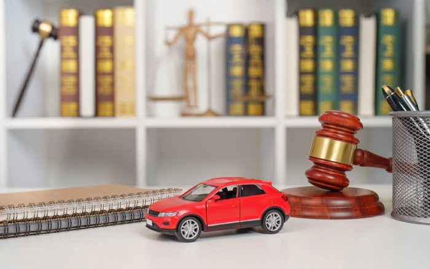

When your car spends days or weeks at a dealership waiting for repairs, the inconvenience can quickly become a serious legal concern. You may wonder how long a dealership can legally keep your vehicle and whether extended repair delays qualify for protection under lemon law.
The answer depends on your state’s laws, the reason for the delay, and whether your vehicle has experienced recurring warranty defects. In California, for example, 30 cumulative days out of service can trigger an important lemon law presumption under certain conditions. Understanding your rights can help you protect your interests and determine when to seek legal assistance.
There is no universal deadline that applies to every dealership repair situation. However, warranty laws generally require manufacturers and their authorized repair facilities to address covered defects within a reasonable time.
Under California Civil Code Section 1793.2(b), warranty repairs generally must be completed within 30 days unless the buyer agrees in writing to a longer period or an applicable exception allows additional time. Delays caused by circumstances beyond the manufacturer’s control may affect this deadline.
This requirement does not automatically mean every vehicle must be returned within 30 days under every circumstance. The repair must address the warranty issue, and the applicable legal requirements depend on the situation.

California’s lemon law provides additional protection when a vehicle repeatedly experiences warranty problems. Under California Civil Code Section 1793.22, a vehicle may qualify for a legal presumption if it remains out of service for more than 30 cumulative calendar days because of repairs during the applicable 18-month or 18,000-mile period, whichever occurs first.
This threshold is significant because the days do not need to be consecutive. Multiple dealership visits for warranty repairs can contribute toward the total.
A lengthy dealership stay does not automatically make your vehicle a lemon. Several factors determine whether you may have a legitimate claim.
If your vehicle repeatedly experiences the same serious problem despite multiple repair attempts, it may qualify for lemon law protection.
California’s legal presumption generally applies when:
These criteria apply within the statutory period and are subject to additional requirements. A manufacturer may also challenge the presumption.
Lemon law typically focuses on defects that substantially impair a vehicle’s use, value, or safety. Examples may include persistent transmission problems, repeated engine failures, electrical malfunctions, or serious braking issues.
Minor cosmetic concerns or routine maintenance generally do not qualify automatically. The severity of the defect and the manufacturer’s opportunity to repair it matter.
If your vehicle has been at the dealership for an extended period, taking organized steps can strengthen your position.
Keep copies of repair orders, invoices, warranty claims, and dealership communications. Make sure each document identifies the reported problem, repair dates, and work performed.
Maintain a personal timeline showing when your vehicle entered and left the dealership. This helps establish the total number of days your car was unavailable.
Contact the manufacturer’s customer service department and explain the repair delays and recurring defects. Request written confirmation of your complaint and retain all correspondence.
If required by the applicable law or warranty materials, provide formal notice directly to the manufacturer.
If your vehicle has been stuck at a dealership for an extended period or continues to experience warranty-related defects, McMillan Law Group can help you understand your rights and explore your options under California lemon law.
Depending on the circumstances, lemon law remedies may include a vehicle replacement or a refund through the manufacturer. California’s Song-Beverly Consumer Warranty Act provides these remedies when the manufacturer cannot repair a qualifying vehicle after a reasonable number of attempts.
Eligibility depends on factors such as warranty coverage, defect severity, repair history, and applicable deadlines. A prolonged dealership stay may strengthen your claim, but it does not guarantee a buyback.